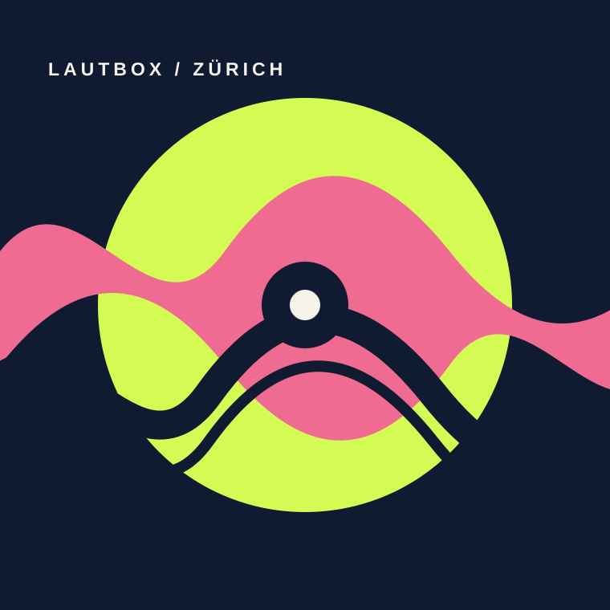

Music studio &
music production
Operating a music studio and providing services in music production.
Zurich · Music studio & creative services
LautBox brings together a music studio and music production with services in art, design, marketing, social media and events.

MUSIC / ART / DESIGN / EVENT
Services
LautBox’s registered business purpose spans music production, creative communication and event work.
Operating a music studio and providing services in music production.
Services in the areas of art and design.
Services in marketing and social media.
Conception, organisation and delivery of events.
Profile
LautBox Cruz Lian is a Zurich business with a wide-ranging creative purpose: music, art, design, communications and events.
Its owner is Luis Cruz Lian. The connection between these fields is set out in the company’s registered business purpose.
Contact
LautBox’s registered business seat is in Zurich. The address is provided in the legal notice.
Legal notice